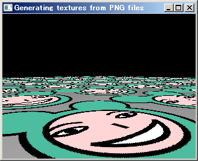

PyOpenGL 3.x 利用ノート¶
筆者が昔 OpenGL をやる必要に迫られたときに、当時所持していた PC のスペックでは C/C++ の環境をまともに構築できず、研究ができない状態になって一瞬困った。 そこで、困ったときの Python 頼みということで、パッケージを探したところ、簡単に PyOpenGL に突き当たった。 早速 PyOpenGL の環境を構築し、学習を始めた。 始めるとすぐに、これが他の NumPy 等の有力パッケージとの強力なコンビ技で、むしろ Python のほうが学習環境に向いているということに気付いた。 OpenGL の勉強には Python を使う。これはなかなかよいコツかもしれない。
本稿は、筆者の個人的な PyOpenGL の環境構築方法および、コードの記述方法等の覚え書きである。
ノート目次
Note
関連リンク¶
- PyOpenGL (The Python OpenGL Binding)
- 本パッケージ総本山サイト。インストール方法やドキュメント等。
- Python Extension Packages for Windows - Christoph Gohlke
- 非公式インストーラー配布元。
- GLUT (Nate Robins - OpenGL - GLUT for Win32)
- OpenGL Utility Toolkit (GLUT) の Windows 版バイナリーを配布しているウェブページ。 XP までのバージョンでないと使えないので、残念ながらもはや価値がない。
インストール¶
- 経験則として NumPy 等、PyOpenGL の依存パッケージ的なものを先にインストールしておくのがコツ。 もちろん本来の意味では PyOpenGL が依存するパッケージというものはない。 しかし、グラフィックのプログラムを書くのならば、 普通はインストールしていないとマズいというものは存在する。 まずは次の 2 つのパッケージを挙げたい。
- PyOpenGL 本体のインストールは上記関連リンクの非公式インストーラーを利用する。
著者の現在の環境は Windows7 64bit なので、選択は次の 2 つとなる。
- PyOpenGL-3.1.0.win-amd64-py3.4.exe
- PyOpenGL-accelerate-3.1.0.win-amd64-py3.4.exe
- GLUT は考慮しないでよくなったもよう。
ドキュメント¶
PyOpenGL は Python のラッパーに過ぎない。 OpenGL が一通り使える技術があれば、 必要な勉強は C 言語でのプログラミングと Python でのそれとの差分を確認するだけということになる。
公式サイトの “PyOpenGL for OpenGL Programmers” という章を読む。
PyOpenGL は実行速度については期待できない。
そもそも速度が欲しいならば肚をくくって C/C++ 環境を検討するし、ここでは学習目的が主なので速度は二の次だ。
- プログラミングの柔軟性、利便性、堅牢性を重視しているらしい。
- 頂点毎の各種演算はアホみたいに遅い。 よって、最低でも配列ベースの演算でコードを書くようにする。
PyOpenGL は SIWG ではなく ctypes を利用して実装されている。
一部関数シグニチャーが C 言語版と PyOpenGL 版とで異なる。 といっても、配列モノの API が Python 風に表現されているだけだ。
PyOpenGL は OpenGL 操作中でのエラー発生時に例外を送出する。 プログラマーが手で glCheckError を書かずにすむというわけだ。
- デバッグが終わったら OpenGL.ERROR_CHECKING = False すればよい。
PyOpenGL はエラーをログ出力する。 OpenGL.ERROR_LOGING = False で無効化。
PyOpenGL では、関数の型別サフィックスが省略できる。 例えば glDrawElements{ub|us|ui} はいずれも glDrawElements とできる。
コード¶
C ではなく Python を利用して OpenGL プログラムを書く利点は、 PyOpenGL の API を NumPy や Pillow といった、高品質なサードパーティ製パッケージの 部品と簡単に組み合わせて利用できる点に尽きる。
欠点は何度も言うように実行が遅いことだ。悲しいくらい遅い。 しかし、グラフィックの初学者には遅い方が学習の上ではむしろ好都合ということもあるだろう。
GLUT ベースのスケルトンを自作しておく¶
簡単な PyOpenGL プログラムの構造は次のようなものになる。 次のようなテキストファイルをテンプレートとして保存しておき、 新しいスクリプトを作成する際には、このテンプレートからコードを「増築」していくようにする。
# -*- coding: utf-8 -*-
# OpenGL の演習スクリプト用テンプレ
"""%prog
A study program of OpenGL
Example: %prog"""
import sys
# 三角関数等を利用するならばコメントアウトを解除する。
#import math
from optparse import OptionParser
from OpenGL.GL import *
from OpenGL.GLU import *
from OpenGL.GLUT import *
# NumPy
#from numpy import array
# Pillow
#from PIL import Image
# main 等で使う変数
window_title=b"OpenGL Study"
window_sx,window_sy = 320,240
window_x,window_y = 100,100
def init():
"""OpenGL ステートを初期化する"""
glClearColor(0., 0., 0., 1.)
glEnable(GL_DEPTH_TEST)
def display():
"""シーンレンダリング"""
glClear(GL_COLOR_BUFFER_BIT | GL_DEPTH_BUFFER_BIT)
glMatrixMode(GL_MODELVIEW)
glPushMatrix()
glLoadIdentity()
# プリミティブを描画する。
glPushAttrib(GL_CURRENT_BIT)
glColor3f(1, 0, 0)
glBegin(GL_POLYGON)
glVertex3f(0, 0, 0)
glVertex3f(1, 0, 0)
glVertex3f(0, 1, 0)
glEnd()
glPopAttrib()
glPopMatrix()
# バッファスワップ
glutSwapBuffers()
################################################################################
# callback
def reshape(width, height):
"""ウィンドウリサイズイベントをハンドルする。"""
if height == 0:
return
glViewport(0, 0, width, height)
glMatrixMode(GL_PROJECTION)
glLoadIdentity()
if width <= height:
# 縦長ビューポートのケース
aspect = float(height) / width
glOrtho(-2, 2, -2 * aspect, 2 * aspect, -5.0, 20.0)
else:
# 横長ビューポートのケース
aspect = float(width) / height
glOrtho(-2 * aspect, 2 * aspect, -2, 2, -5.0, 20.0)
# もしくは
#gluPerspective(45.0, float(width)/height, 1.0, 100.0)
glMatrixMode(GL_MODELVIEW)
glLoadIdentity()
def keyboard(key, x, y):
"""キーボードイベントをハンドルする。"""
if ord(key) == 0o33:
# ESC
print('ESC pressed', file=sys.stderr)
sys.exit()
def mouse(button, state, x, y):
"""マウスのクリックイベントをハンドルする。"""
pass
def motion(x, y):
"""マウスのモーションイベントをハンドルする。"""
pass
################################################################################
# main
def main(options, args):
# GLUT を初期化する。
glutInit(sys.argv)
# ウィンドウを設定する。
glutInitDisplayMode(GLUT_DOUBLE | GLUT_RGB | GLUT_DEPTH)
glutInitWindowSize(window_sx, window_sy)
glutInitWindowPosition(window_x, window_y)
glutCreateWindow(window_title)
# OpenGL ステートを初期化する。
init()
# コールバック関数を登録する。
glutDisplayFunc(display)
glutKeyboardFunc(keyboard)
glutReshapeFunc(reshape)
glutMouseFunc(mouse)
#glutMotionFunc(motion)
glutMainLoop()
if __name__ == '__main__':
parser = OptionParser(__doc__)
options, args = parser.parse_args()
#if len(args) < 1:
# print(parser.print_help(), file=sys.stderr)
# sys.exit(1)
main(options, args)
仮に実行すると、黒い画面に赤い三角形が描画されているのが確認できるはずだ。 以降の各デモコードでは、このスケルトンの差分部分・修正部分を記述する。
一点、注意がある。 glutCreateWindow の実引数となる文字列 window_title の型に注意して欲しい。 素の文字列ではエラーが起こるのを避けるべく、接頭辞 b を付けている。
C 言語で配列に相当する型の実引数を与える¶
- 何度も言うが型を示すサフィックスが省略できる。 例えば glLightfv ではなく glLight でよい。
- 値の与え方もかなり柔軟になっている。 list, tuple, numpy.ndarray, etc. を直接与えることが許される。
from OpenGL.GL import *
from OpenGL.GLU import *
from OpenGL.GLUT import *
import numpy as np
SPECULAR_VALUE = np.ones(4)
DIFFUSE_VALUE = SPECULAR_VALUE * .9
DIFFUSE_VALUE[3] = 1.0
AMBIENT_VALUE = SPECULAR_VALUE * .1
AMBIENT_VALUE[3] = 1.0
def init_lighting():
glEnable(GL_LIGHTING)
glEnable(GL_LIGHT0)
glLight(GL_LIGHT0, GL_POSITION, (0.0, 0.0, 1.0, 0.0))
glLight(GL_LIGHT0, GL_AMBIENT, AMBIENT_VALUE)
glLight(GL_LIGHT0, GL_DIFFUSE, DIFFUSE_VALUE)
glLight(GL_LIGHT0, GL_SPECULAR, SPECULAR_VALUE)
glEnable(GL_COLOR_MATERIAL)
glColorMaterial(GL_FRONT_AND_BACK, GL_AMBIENT_AND_DIFFUSE)
glMaterial(GL_FRONT_AND_BACK, GL_SPECULAR, SPECULAR_VALUE)
glMaterial(GL_FRONT_AND_BACK, GL_EMISSION, (0.0, 0.0, 0.0, 1.0))
PNG ファイルからテクスチャーを生成する¶
ポイントは Pillow の Image インスタンスの tostring 戻り値を glTexImage2D に渡すことだ。 ここではアルファチャンネルを含む PNG ファイルからテクスチャーデータを作成する例を示す。
def init¶
まずはテクスチャー設定から。
def init():
glClearColor(1., 1., 1., 1.)
glEnable(GL_DEPTH_TEST)
glEnable(GL_TEXTURE_2D)
# Comment 1
img = Image.open('illvelo.png').resize((256, 256))
assert img.mode == 'RGBA'
# Comment 2
glTexImage2D(GL_TEXTURE_2D, 0, 4, img.size[0], img.size[1], 0, GL_RGBA, GL_UNSIGNED_BYTE, img.tostring())
glTexParameterf(GL_TEXTURE_2D, GL_TEXTURE_WRAP_S, GL_REPEAT)
glTexParameterf(GL_TEXTURE_2D, GL_TEXTURE_WRAP_T, GL_REPEAT)
glTexParameterf(GL_TEXTURE_2D, GL_TEXTURE_MAG_FILTER, GL_LINEAR)
glTexParameterf(GL_TEXTURE_2D, GL_TEXTURE_MIN_FILTER, GL_LINEAR)
glTexEnvf(GL_TEXTURE_ENV, GL_TEXTURE_ENV_MODE, GL_DECAL)
- Comment 1
- Pillow 利用ノート で利用した PNG ファイルからテクスチャーを作成している。 ファイルのピクセルサイズがやや中途半端なので、決め打ちだが 256 ピクセル四方にリサイズする。
- Comment 2
glTexImage2D 呼び出しにより、テクスチャーデータを OpenGL に渡している。 後半の実引数群に注目したい。
残りの関数呼び出しは、アプリケーションの目的に応じてパラメーターを指定すること。
def display¶
次に描画ロジックを示す。明らかに手抜きコードだが、説明にはこれで十分だろう。 これを display の主要部分に加える。
vx, vy = 40.0, 40.0
tx, ty = 6.0, 6.0
vertices = (
-vx, -vy, 0.0,
vx, -vy, 0.0,
vx, vy, 0.0,
-vx, vy, 0.0,)
texcoords = (
-tx, -ty,
tx, -ty,
tx, ty,
-tx, ty,)
colors = (
0, 0, 0, 0.75,
0, 0, 0, 0.75,
1, 1, 1, 0.75,
0, 0, 0, 0.75,)
def display():
"""シーンレンダリング"""
glClear(GL_COLOR_BUFFER_BIT | GL_DEPTH_BUFFER_BIT)
glMatrixMode(GL_MODELVIEW)
glPushMatrix()
glLoadIdentity()
gluLookAt(14, 14, 1.58,
0, 0, 0,
0, 0, 1)
# プリミティブを描画する。
glPushAttrib(GL_CURRENT_BIT)
glPushClientAttrib(GL_CLIENT_VERTEX_ARRAY_BIT)
glEnableClientState(GL_VERTEX_ARRAY)
glEnableClientState(GL_TEXTURE_COORD_ARRAY)
glEnableClientState(GL_COLOR_ARRAY)
glVertexPointer(3, GL_FLOAT, 0, vertices)
glTexCoordPointer(2, GL_FLOAT, 0, texcoords)
glColorPointer(4, GL_FLOAT, 0, colors)
glDrawArrays(GL_POLYGON, 0, 4)
glPopClientAttrib()
glPopAttrib()
glPopMatrix()
# バッファスワップ
glutSwapBuffers()
実行すると以下のようなイメージ (320x240) を得るだろう。
{kind=link}
日本語テキストを描画する¶
PIL のテキスト描画機能と PyOpenGL のテクスチャー機能を活用したプログラム例。 要所のみを説明する。
def drawtext¶
def drawtext(text, initsize=256, point=144, margin = 4):
# 大きめのキャンヴァスを用意しておく。
img = Image.new('RGBA', (initsize, initsize), (0, 0, 0, 0))
dr = ImageDraw.Draw(img)
fnt = ImageFont.truetype('hgrme.ttc', point)
ext = dr.textsize(text, font=fnt)
dr.text((margin, margin), text, font=fnt, fill='white')
img = img.crop((margin, margin, ext[0]+margin*3, ext[1]+margin*3))
# TODO: img.size の各成分に最も近い最小の 2 のべき乗の値を使う。
img = img.resize((initsize, initsize), Image.ANTIALIAS)
return img
def display¶
vx, vy = 5.0, 5.0
vertices = (
-vx, vy, 0.0,
-vx, -vy, 0.0,
vx, -vy, 0.0,
vx, vy, 0.0,)
texcoords = (
0, 0,
0, 1,
1, 1,
1, 0)
colors = (
1, 1, 1, 1,
0.5, 0.5, 0.5, 1,
0.5, 0.5, 0.5, 1,
1, 1, 1, 1,)
def display():
glClear(GL_COLOR_BUFFER_BIT | GL_DEPTH_BUFFER_BIT)
glMatrixMode(GL_MODELVIEW)
glPushMatrix()
glLoadIdentity()
gluLookAt(0.5, -9.5, 1.58,
0.5, 10.0, 1.58,
0, 0, 1)
glPushAttrib(GL_ALL_ATTRIB_BITS)
glPushClientAttrib(GL_CLIENT_ALL_ATTRIB_BITS)
glEnableClientState(GL_VERTEX_ARRAY)
glEnableClientState(GL_TEXTURE_COORD_ARRAY)
glEnableClientState(GL_COLOR_ARRAY)
glVertexPointer(3, GL_FLOAT, 0, vertices)
glTexCoordPointer(2, GL_FLOAT, 0, texcoords)
glColorPointer(4, GL_FLOAT, 0, colors)
glDrawArrays(GL_QUADS, 0, 4)
glPopClientAttrib()
glPopAttrib()
glPopMatrix()
glutSwapBuffers()
def reshape¶
def reshape(width, height):
# ... 略 ...
gluPerspective(45.0, float(width)/height, 1.0, 20.0)
以上を実行すると、実行結果のスクリーンショットはだいたい次のようなものになる。

PIL + glReadPixels によるスクリーンショット取得¶
def capture_screen():
sx = glutGet(GLUT_WINDOW_WIDTH)
sy = glutGet(GLUT_WINDOW_HEIGHT)
pixels = glReadPixels(0, 0, sx, sy, GL_RGBA, GL_UNSIGNED_BYTE)
img = Image.fromstring("RGBA", (sx, sy), pixels)
img = img.transpose(Image.FLIP_TOP_BOTTOM)
filename = raw_input('filename: ')
img.save(filename)
print('%s saved' % filename)
この関数をキーボードイベントコールバックあたりから呼び出すようにしておくと便利。